Your files,
your AI,
your apps.
No account needed.
Native support for macOS
limited support on Windows & Linux.
HTML powered by local Python
A web page you see, a Python file that does the work.
View
Execution
Local Ecosystem
Connects with Python, Claude Code, local AI models and your machine’s own APIs.
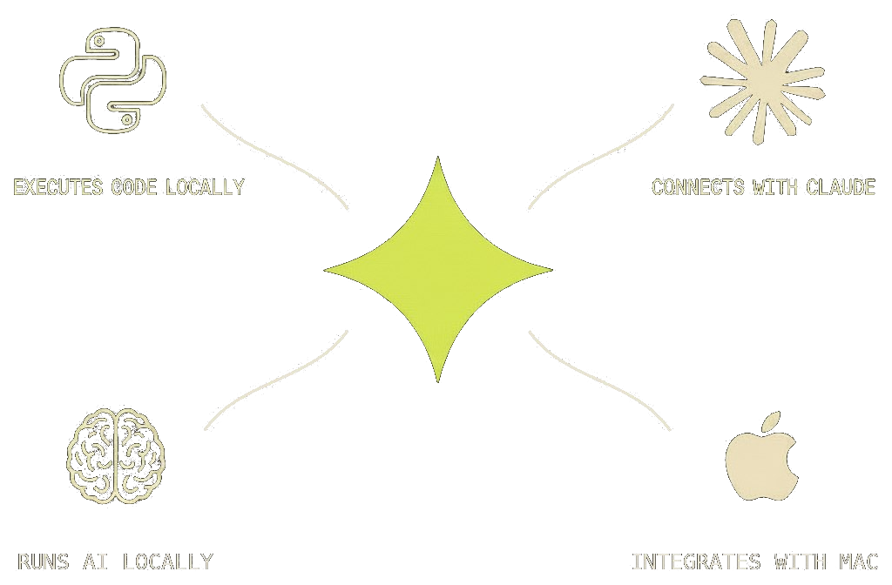
AI models run on your local machine.
No account, no API key, no per-token bill.
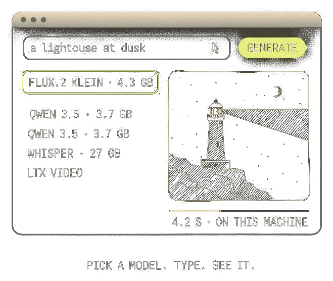
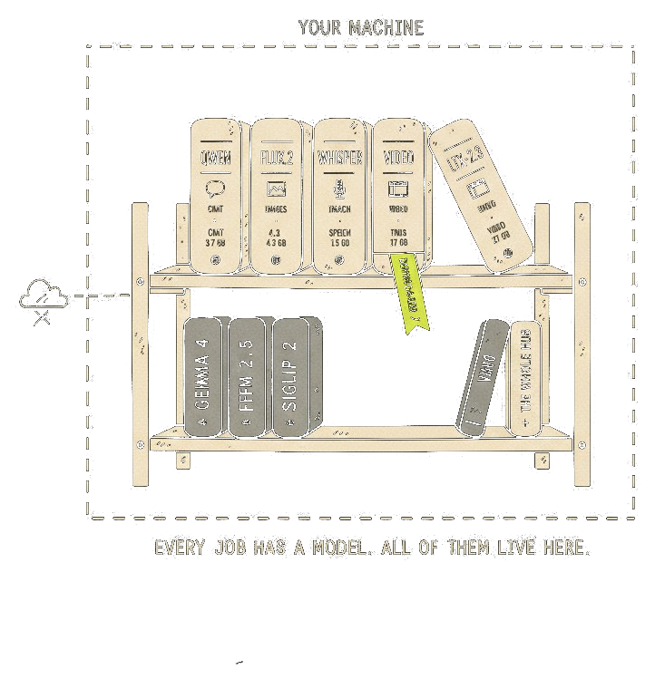
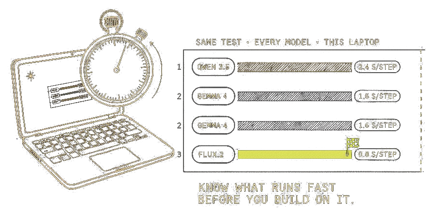
AI models run on your local machine.
No account, no API key, no per-token bill.
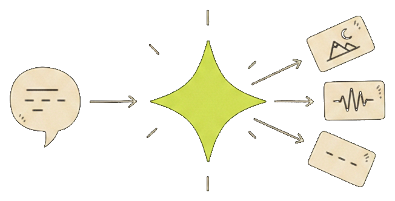
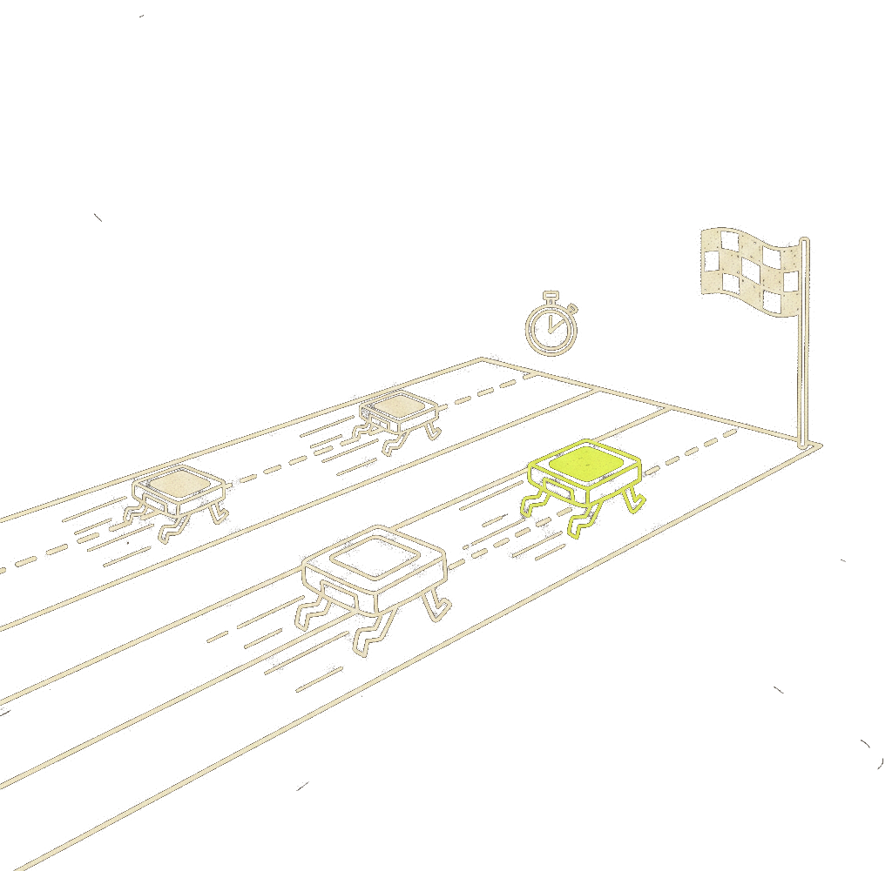
Claude Code, without the terminal.
Every task on your machine, in one list. Start one, pick one up where it stopped, or schedule one for later.
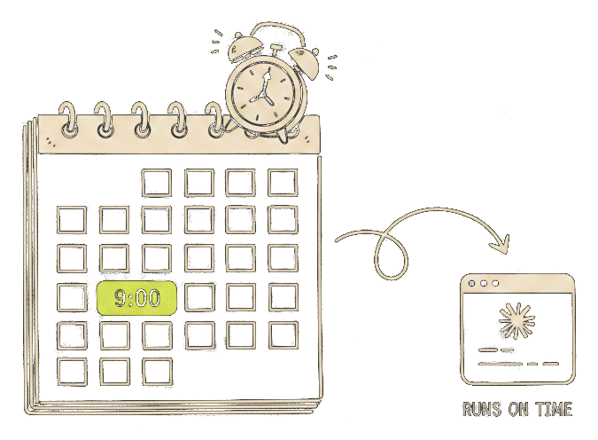
One window for 100+ kinds of file.
Stop hunting for the app that opens it.
- Query a table.
- Map a dataset.
- Ask Claude about the file beside it.
- CSV
- Parquet
- XLSX
- SQLite
- ZIP
- JSON
- Markdown
- GeoTIFF
- NetCDF
- Shapefile
- GLB
- and 100+ more
Use community apps, or build your own.
A chatbot answers questions. A tool does the work.

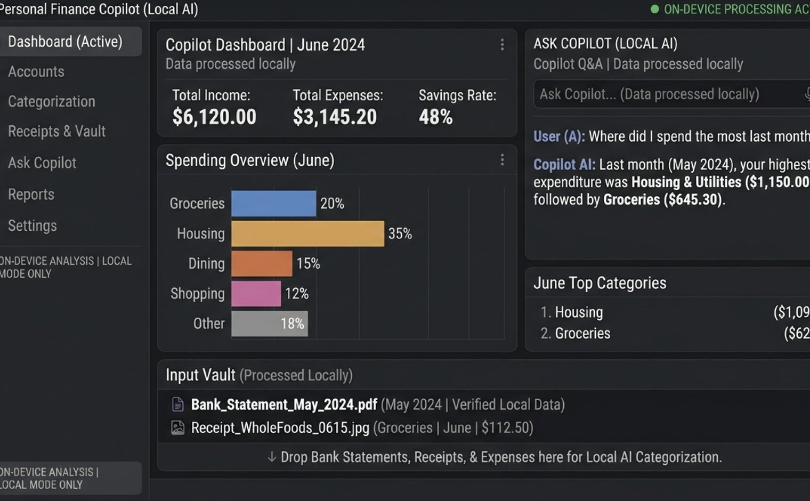
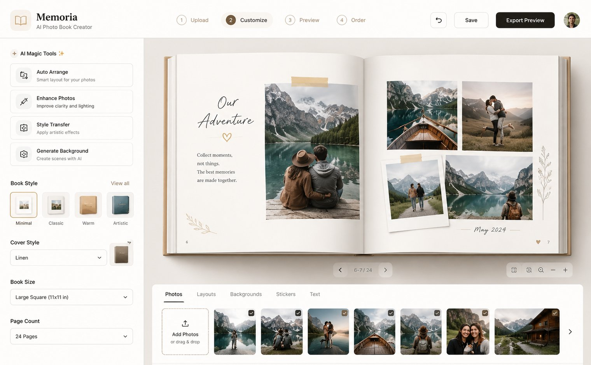
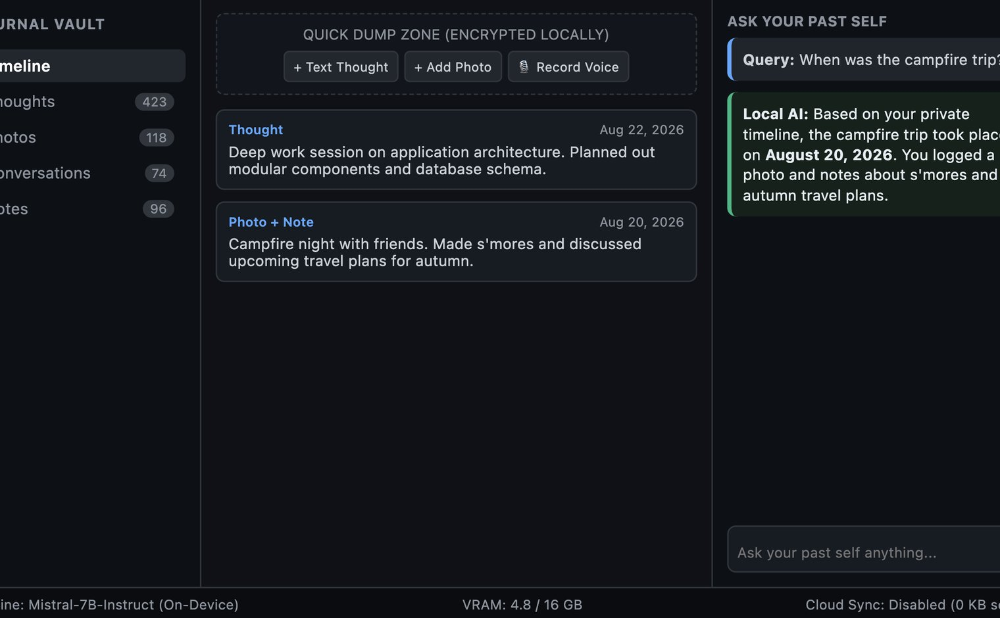
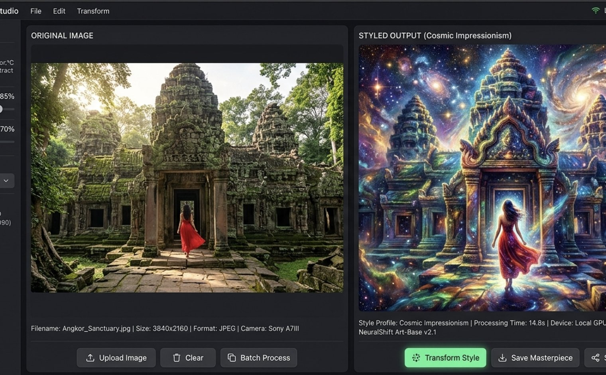
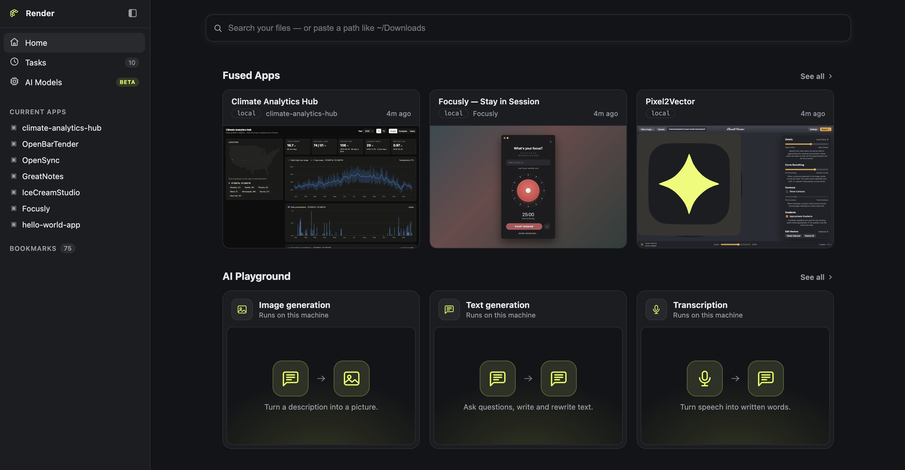
Free, and it stays on your machine.
One download. No account, no key, no card.
Troubleshooting
Something not working? Pick what's happening on the left — the fix is on the right.
The error you'll see
What happened
Fused Render uses Claude on your computer to build things. Claude is installed, but it isn't signed in to your account yet — so nothing can run.
How to fix it
- Open the Terminal app: press
⌘ Space, type Terminal, press Return. - Type
claudeand press Return. - Type
/loginand press Return. Your browser opens — sign in with your Claude account (the same one you use at claude.ai). - Come back to Fused Render and start a new chat.
The error you'll see
What happened
Fused Render needs a free helper called Claude Code to build things, and it couldn't find it on this Mac. Either it was never installed, or it's somewhere the app can't see.
How to fix it
- Install Claude Code from claude.com/claude-code.
- Check it worked: open Terminal (
⌘ Space, type Terminal), typeclaude, press Return. It should start. - Quit Fused Render and open it again.
The error you'll see
What happened
Your Claude plan includes a set amount of use, and you've used it up for now. Nothing is broken — you just have to wait.
How to fix it
- Wait for your limit to reset — the error message tells you when.
- In a hurry? Upgrade your plan at claude.ai.
- Nothing to change in Fused Render — try again after the reset.
The error you'll see
What happened
The app ran into a problem it doesn't have a friendly explanation for, so it showed the technical message as-is. Usually it's really one of the other three issues underneath.
How to fix it
- Check the sign-in and install fixes above — they clear most of these.
- Start a new chat in Fused Render and try again.
- Still stuck? Tell us here and paste the exact error text — we'll help.